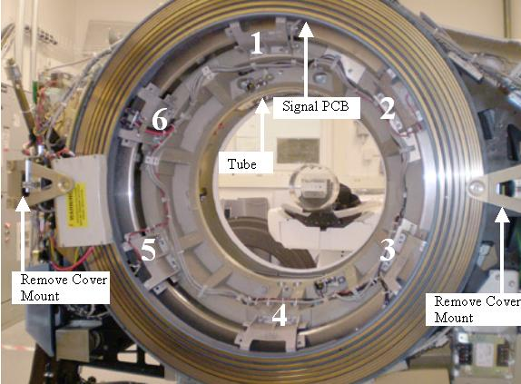

Start at 12 o’clock and write “1” on all three surfaces. See Illustration 2.
Continue clockwise with the next mount with number 2. Do this for all remaining mounts.
This will ensure everything will be installed in the same locations.
Illustration 2: Slip Ring bracket locations
